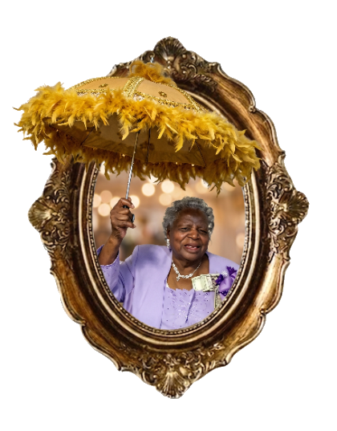

Welcome to Chapter Five. I am Bonnie Bartholomew, and it is my absolute honor to invite you to step into the story of my dear grandmother, Beulah Barabino. Come along with me on this journey as we trace her beautiful path from the country roads of Rosedale and Pine Grove to the historic streets of the Seventh Ward in New Orleans. This is her story.
Born to Magnolia “Big Ma” Robertson and Lamar Robertson, my grandmother’s story began in Rosedale, Louisiana. Her early years were rooted in the deep bonds of family, and she later moved with her parents and siblings to Pine Grove, Louisiana. It was there that her life’s journey of love, family, and perseverance truly began to take shape, laying the foundation for the extraordinary matriarch she would become.
In time, my grandmother was united in marriage to my grandfather, Edgar Barabino. From their beautiful union came eight wonderful children: Beverly, Betty, Catherine, Edgar, Larry, Kevin, Marshall, and Wilbert. Looking to build a bright future for her growing family, my grandmother made the move from Pine Grove to New Orleans, settling the family in the historic Seventh Ward.
Through her immense strength, unwavering dedication, and unconditional love, she created a home and a family foundation that would continue to thrive for generations. Her children were, without a doubt, her greatest pride and joy, yet that immense love she carried simply couldn’t be contained within the walls of her own home.
She became the true centerpiece of her community. Her home was the safe, welcoming haven where all the neighborhood kids convened to play out front. She was always there on the porch or looking out the door, keeping a watchful, loving eye on everyone and making sure the entire neighborhood felt like family.
The legacy my grandmother built is reflected in the countless lives she helped shape. Her family tree has flourished beyond measure, growing to include 27 grandchildren, 68 great-grandchildren, 55 great-great-grandchildren, and even a great-great-great-great-grandchild!
To know my grandmother was to know a woman whose story was about so much more than just names and numbers; it was a powerful story of sacrifice, strength, and joy. She was absolutely famous for her incredible New Orleans gumbo — a legendary dish that was the highlight of our gatherings and could bring the whole family running to her kitchen.
She loved the vibrant energy of the city and thoroughly enjoyed attending the local parades. And when football season rolled around, you could always find her up in Tad Gormley Stadium supporting one of her grandkids, or fanatically in the Superdome screaming at the top of her lungs, “WHO DAT SAY THEY GONNA BEAT THEM SAINTS!”
It is absolutely true — my grandmother was the life of every single party. In fact, many of our family get-togethers simply didn’t start until she arrived. The moment she walked into a room, the entire energy shifted. She brought with her an infectious spirit filled with endless laughter, music, dancing, and a magnetic warmth that drew everyone right to her side. She had a special gift for making every gathering feel like a grand celebration of life and family. Though her roots were grounded in the country soil of Rosedale, every fiber of my grandmother’s soul was Naturally New Orleans, and she will always be the undeniable star of our show.
On behalf of myself and all the generations that follow her, it is my absolute honor to formally reintroduce you to the daughter of Big Ma and Lamar — our beloved matriarch, Beulah Barabino. Her legacy lives on not only in the family she raised, but in every single generation that carries her name, her memories, and her love forward. Thank you so much for coming along with me on this journey through Chapter Five to celebrate her beautiful, unforgettable life.
